Longe de exaurir os sistemas para plotagem de dados pelo R, existem três sistemas básicos que operam de modo independente a partir de pacotes do programa:
Graphics. Inserido no pacote básico de instalação padrão do R, base, o sistema Graphics é que mais se comunica com os diversos pacotes para análises estatísticas e matemáticas do programa, embora seja mais analítico do que estético.
Em sua essência, o Graphics gera o resultado gráfico em cada linha de comando; dessa forma, para o output de dados multivariados são necessárias linhas de comando semelhantes para cada conjunto, embora haja a possibilidade de trabalhar-se com gráficos a partir de matrizes como dataframes (função matplot).
Lattice. Significando algo como entrelaçado (em tradução livre), o sistema pertence ao pacote homônimo lattice, e foi concebido para a produção de gráficos estatísticos de dados multivariados (trellis). Constitui um sistema com output mais estético que o padrão do R, goza da comunicabilidade entre pacotes desse, é bastante simples para gráficos de mesma natureza, embora seja complexo para representações contendo análises matemáticas. Diferente do anterior, a compilação é feita por algoritmo em uma única linha de comando para dados multivariados. Em sua essência, o lattice permite a construção de um gráfico para dados multivariados em apenas uma linha de comando.
ggplot2. O mais conhecido para produção estética de gráficos para publicação do R e data science, permitindo-se trabalhar-se tanto com dados univariados ou multivariados, como simultaneamente, para a produção de gráficos elegantes, bem como para análise de dados. Via de regra, contudo, não fornece os resultados quantitativos das análises, apenas sua visualização gráfica. | Em sua essência, o ggplot2 trabalha com camadas que se somam (“+”) para a renderização final do gráfico, de modo similar a programas de edição de imagens (ex: Inkscape, Photoshop).
8.1.1 Um pouco mais sobres os sistemas gráficos
O graphics é o sistema que vem na instalação padrão do R (base), não sendo necessário qualquer pacote de instalação adicional (como o ggplot2). Embora o graphics seja mais limitado e/ou trabalhoso para análise com dados multivariados comum em Ciência de dados, é o sistema mais confortável na comunicação com outros pacotes de análises de dados do ecossistema R. Isso permite a produção de gráficos concomitante a resultados de análises, como ANAVA, ajustes lineares e curvilineares, bem como de análise numérica e programação, por exemplo. Trabalha com a produção gráfica de dados, uni ou multivariados, somente no formato Wide.
Por outro lado, como o graphics foi concebido primariamente no R, outros pacotes gráficos surgidos depois complementam sua limitação, quer para divulgação e publicação científica (ggplot2), ou para análise multivariada e Ciências de dados (lattice, ggplot2).
Não obstante, o ggplot2 exige uma gramática de gráficos específica em sua sintaxe, costuma “conversar” com um número limitado de outros pacotes (como o conjunto tidyverse), e não é o mais indicado para análises estatísticas e matemáticas concomitantes à produção gráfica. Esse último demérito vem do fato de que o ggplot2, embora possa se comunicar com alguns pacotes estatísticos e de análises, foi concebido originalmente para a visualização de dados, e não para análise propriamente dita. Como ponto positivo adicional, é o sistema empregado por pacotes de animação na web, tais como shiny. Adicionalmente, permite a produção de gráficos a partir de estatísticas oriundas dos próprios dados, sem análise prévia requerida. Como ponto singular, exige que para gráficos multivariados os dados estejam com os subgrupos em formato Long.
Do outro lado, o lattice foi concebido para a produção de gráficos e análise concomitantes, o que permite maior abrangência de comunicabilidade com outros pacotes do R. Não obstante, essa comunicação requer um maior aprofundamento do algoritmo envolvido nas linhas de programação, o que torna o lattice não tão intuitivo como o graphics. Adicionalmente, permite trabalhar-se com formato de dados Wide ou Long, e possui pacote que permite simular a estética de gráficos do ggplot2.
Em síntese:
graphics não requer instalação, permite gráficos mais simples (embora suficientes para análises convencionais), é menos estético, é mais intuitivo, mas também mais trabalhoso para compor gráficos complexos e dados multivariados, e tem a vantagem de comunicar-se no ecossistema de pacotes de análises do R. Na percepção deste autor, possui um fluxo mais confortável para análise de dados concomitante à gráficos explanatórios, como em representações de modelos matemáticos.
lattice combina a produção gráfica com análises de dados convencionais do R, embora seja de sintaxe mais elaborada para gráficos que exijam ajustes matemáticos mais complexos, e é mais voltado à conjuntos de dados multivariados e produção de paineis.
ggplot2 é o sistema mais adotado em data science, possui uma estética inigualável aos demais sistemas gráficos do R, é bastante flexível, desde gráficos simples aos de alta complexidade, comunica-se perfeitamente com outros pacotes, embora somente os correlatos (como o ecossistema tidyverse), mas não permite a produção de gráficos concomitante à diversas análises do R. Essas análises, embora estejam implícitas nas imagens (como ajustes lineares, parabólicos ou não lineares), não são oferecidas à visualização ou programação subsequente (como parâmetros de ajustes de modelos), tal como no sistema base e no lattice.
8.1.2 Conversão de formatos de apresentação de dados: Long & Wide
Como explicado acima, pacotes gráficos do R podem trabalhar nos dois formatos, Long (ggplot2) e Wide (graphics). O pacote lattice permite operar com os dois formatos
Para exemplificar esses formatos, ilustra-se um dataframe criado em Long, como segue.
grupo <-c(rep(rep(1:4, 4),4))resposta <-c(1,2,3,4,2,4,6,8,10,14,18,22,24,30,36,42)niveis <-c(rep("A",4),rep("B", 4), rep("C", 4), rep("D", 4)) # criação de vetores para dataset com subgruposdf.l <-data.frame(grupo, resposta, niveis);df.l
grupo resposta niveis
1 1 1 A
2 2 2 A
3 3 3 A
4 4 4 A
5 1 2 B
6 2 4 B
7 3 6 B
8 4 8 B
9 1 10 C
10 2 14 C
11 3 18 C
12 4 22 C
13 1 24 D
14 2 30 D
15 3 36 D
16 4 42 D
17 1 1 A
18 2 2 A
19 3 3 A
20 4 4 A
21 1 2 B
22 2 4 B
23 3 6 B
24 4 8 B
25 1 10 C
26 2 14 C
27 3 18 C
28 4 22 C
29 1 24 D
30 2 30 D
31 3 36 D
32 4 42 D
33 1 1 A
34 2 2 A
35 3 3 A
36 4 4 A
37 1 2 B
38 2 4 B
39 3 6 B
40 4 8 B
41 1 10 C
42 2 14 C
43 3 18 C
44 4 22 C
45 1 24 D
46 2 30 D
47 3 36 D
48 4 42 D
49 1 1 A
50 2 2 A
51 3 3 A
52 4 4 A
53 1 2 B
54 2 4 B
55 3 6 B
56 4 8 B
57 1 10 C
58 2 14 C
59 3 18 C
60 4 22 C
61 1 24 D
62 2 30 D
63 3 36 D
64 4 42 D
Alguns pacotes de R permitem converter o formato Long para Wide e vice-versa, como o reshape2 ou tydir. Convertendo o dataframe acima para formato Wide pelo reshape2:
library(reshape2)df.w <-reshape(df.l,idvar ="grupo",timevar ="niveis",direction ="wide"); df.w # conversão de formato Long para Wide
Warning in reshapeWide(data, idvar = idvar, timevar = timevar, varying =
varying, : multiple rows match for niveis=A: first taken
Warning in reshapeWide(data, idvar = idvar, timevar = timevar, varying =
varying, : multiple rows match for niveis=B: first taken
Warning in reshapeWide(data, idvar = idvar, timevar = timevar, varying =
varying, : multiple rows match for niveis=C: first taken
Warning in reshapeWide(data, idvar = idvar, timevar = timevar, varying =
varying, : multiple rows match for niveis=D: first taken
Para a conversão de volta a Long utilizando-se o mesmo pacote reshape2:
df.l2 <-reshape(df.w, idvar ="ID", direction ="long"); df.l2
grupo niveis resposta.A
1.A 1 A 1
2.A 2 A 2
3.A 3 A 3
4.A 4 A 4
1.B 1 B 2
2.B 2 B 4
3.B 3 B 6
4.B 4 B 8
1.C 1 C 10
2.C 2 C 14
3.C 3 C 18
4.C 4 C 22
1.D 1 D 24
2.D 2 D 30
3.D 3 D 36
4.D 4 D 42
8.2 O sistema base (graphics)
A seguir descreve-se a utilização do pacote base para gráficos do R, e com maior riqueza de detalhes que os demais (ggplot2 e lattice). Essa escolha autoral reside em alguns aspectos, tais como:
Naturalidade de sua instalação original do R. Não há necessidade de instalação de qualquer pacote adicional;
Garantia de operação do sistema. Por ser o primário do R, já não sofre mais com alterações e atualizações que, às vezes, geram erros na compilação (mensagem: “deprecated”);
Alta flexibilidade para relações mais simples entre variáveis (mais comum em dados de “bancada de experimentos” do que em dados multivariados -lattice ou data science e publicação científica -ggplot2);
Caráter mais intuitivo, além de uma comunicação mais abrangente com os demais pacotes de análises e manipulação de dados do ecossistema do R (cálculos, análise numérica, simulação, programação, ajuste de modelos);
Possibilidade de plotagem de equações de modo mais simples que ggplot2;
. De fato, talvez essa última característica seja mais relevante quando se deseja a obtenção de resultados analíticos em paralelo às representações gráficas.
O graphics trabalha com o comando plot em seus múltiplos argumentos:
plot(x, y =NULL, type ="p", xlim =NULL, ylim =NULL,log ="", main =NULL, sub =NULL, xlab =NULL, ylab =NULL,ann =par("ann"), axes =TRUE, frame.plot = axes,panel.first =NULL, panel.last =NULL, asp =NA,xgap.axis =NA, ygap.axis =NA, ...)
O comando permite duas formas de digitação, cartesiana, plot(x,y), ou por formula, plot(y~x). Além disso, e diferentemente do ggplot2 e do lattice, o sistema base elabora o gráfico principal numa linha de comando, e incorpora elementos estéticos ou de modelagem em linhas subsequentes.
O comando plotpode ser utilizado por diversas formas, o que o distingue dos demais packages citados, que trabalham somente com a identificação de colunas (vetores) por datasets. Assim, pelo graphics é possível plotar com:
Vetores criados “na unha”, de vetores de dados isolados;
Vetores de um dataset com identificação por símbolo $;
Vetores de um dataset identificado na função plot;
Vetores de dataset carregados por comando attach;
Vetores isolados e carregados no ambiente do R.
Exemplificando:
# 1. A partir de vetores criados dentro da funçãoplot(x=c(1,2,3,4),y=c(2,5,7,11))
# 2. Vetores identificados no *dataset* com o símbolo $df <-data.frame(A =c(1,2,3,4),B =c(3,7,2,9),C =c(4,6,8,10))plot(df$A,df$C)
# 3. Vetores de dataset identificados na funçãoplot(B~C, data=df) # Obs: nesse último, é necessário o símbolo "tilde" ~; caso contrário (se por "," por ex), o R informa um erro.
# 4. Vetores de dataset carregado com `attach`df1 <-data.frame(G =c(1,2,3,4),H =c(3,7,2,9))attach(df1)plot(G,H)
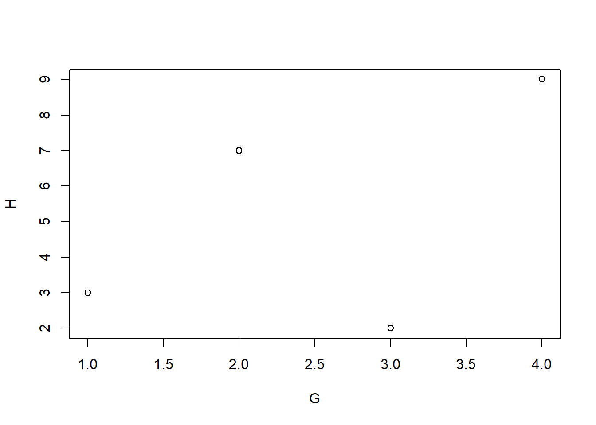
# 5. Vetores pré-definidos no ambientek <-seq(10:90)m <-sin(k)plot(m~k, type="l")
Alguns gráficos básicos permitidos pelo graphics envolvem:
plot() - pontos, linhas, pontos e linhasbarplot() - plot de barrashist() - histogramaboxplot() - gráfico Box-Whiskerspersp() - gráfico 3Dpie() - gráfico de tortadotplot() - sequência de valores (com *jitter*, espalhameto de pontospairs() - painel múltiplo com todas as variáveis plotadasmatplot() - plota vetores de matrizes, como *dataframes*
Exemplificando para um gráfico de barras:
m <-matrix(c(70,60,40,60,40,20),nrow=2, byrow=TRUE,dimnames=list(c("teste1", "teste2"), c("controle", "método1", "método2"))) # criação dos dadosbarplot(m, beside=TRUE, legend.text =TRUE, ylim=c(0,100),xlab="Métodos", ylab="Resultados")
Além disso, diversas personalizações são possíveis pelo sistema graphics, quer para todos os pontos, como para um vetor de qualidades relativas aos pontos, dentre as quais:
type - tipo de plot: pontos "p", linhas "l", pontos+linhas com cruzamento "o", pontos+linhas sem cruzamento "b", linhas verticais "h", steps "s", sem representação "n";cex - tamanho do ponto (ex:0.5, 20);lty -"line type", tipo da linha; pode se representado por um valor (1,2,...) ou por "solid", "dotted", "dashed", "dotdash", "longdash", "twodash";lwd -"line width", largura da linha (6 níveis)pch - tipo de ponto (1-25)xlim, ylim - limite dos eixos; ex: ylim=c(-2,10)xlab, ylab -etiquetas ("label") dos gráficoscol -cor (números ou nomes); ex:"red", "orange"main - título do gráficosub - subtítulo do gráficolog - eixo logaritmojitter - espalhamento de pontos (evita sobreposição)
E diversas personalizações ou inserções são permitidas após a execução do gráfico, tais como:
rug - marcação de pontos no eixo (reforça identidade)text - inserção de texto mtext - inserção de texto nas margens do plotaxis - adiciona um eixoabline - acrescenta uma linha reta (h, v, de valores, ou de ajuste)grid - rede de marcação dos "ticks"bg - plano fundo ("background")
Exemplificando alguns dos argumentos acima para um gráfico genérico:
A =seq(1:100)B = A^2# criação de vetor resposta pro gráficoplot(x=A, y=B,cex=2,pch=3,type="o",lty="dotted",col=3,lwd=2,xlim=c(10,80),ylim=c(1e2,1e4),xlab="eixo x", ylab="eixo y",main="Meu título",sub="Meu subtítulo",log='xy')
df <-data.frame(A,B)matplot(df, pch=1, type ="b") # exemplo de `matplot`abline(h=4000, lty=2, col=5) # adiciona uma linha azul pontilhada
Também é possível atribuir alguns parâmetros (cex, pch, por exemplo) em função dos níveis de uma variável:
x =c(1,2,3,4,5,6,7,8,9) y =c(6,7,8,9,10,11,12,13,14) z =rep(LETTERS[1:3],3)plot(x,y, cex=1:length(unique(z)))
E também é possível definir alguns argumentos em função de outros, como o tamanho (‘cex’) e um texto:
plot(x,y)text(x=2, y=10, "abc", cex=2, col=7)
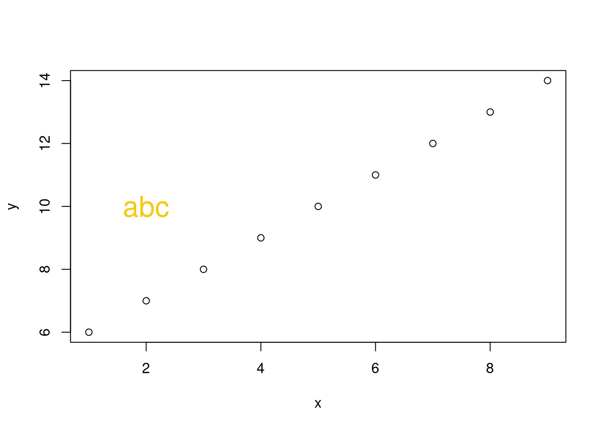
8.2.1 Armazenamento
No pacote base um gráfico pode ser armazenado abrindo-se inicialmente uma conexão, elaborando-se o gráfico, e fechando-se a conexão, como ilustrado a seguir:
pdf("grafico.pdf", width=7, height=4) # abre a conexãoplot(x,y) # elabora o gráficodev.off() # fecha a conexão# Obs: outros formatos possíveis: jpeg, bmp, tiff, ps, png
8.2.2 Linhas adicionais & graphics
O pacote base opera produzindo o gráfico pela linha de comando contida em plot(). Não obstante, é possível adicionar outras linhas para o complemento analítico, estético, e mesmo estatístico do gráfico, como legenda, barra de erros, pontos ou linhas adicionais, resumo estatístico, adição de seta, texto, linhas (de ajuste ou suavidade - spline, lowess), dentre outras. Ilustrando todos esses ítens num único gráfico:
A =seq(from=2, to=10)B = A/2+runif(n=9,min=0.2,max=2) # vetor resposta com com erro aleatórioC = B+1# vetor resposta adicional pro gráficoajus <-lm(B~A) # ajuste linear dos dadosplot(A,B,type="o", col="brown") # plot de pontos e linhasarrows(x0=A,y0=B-0.1*B,x1=A,y1=B+0.1*B,angle=90,code=3,length=0.1,lwd=0.7,col="blue") # adição de barra de erros (nota: quando o tipo for de barras - barplot, ambos "x0" e "x1" são o dataframe)arrows(x0=2,y0=4,x1=5,y1=5,length=0.1,angle=45, col="green") # adição de setatext(x=3,y=4,"tendência",cex=0.9, col="orange") # adição de textolines(spline(A,B),col="red") # adição de linha de ajuste genéricaabline(ajus, lty=2) # adção de reta de ajuste linearpoints(A,C-1, type="b", col="pink") # pontos adicionaisdf <-cbind(A,B,C) # cria um dataframemed <-apply(df, 1, mean) # calcula a média das linhas do dataframepoints(A,med,pch=17) # adiciona pontos de médialines(lowess(A,med, f=0.9), pch=17, col =5) # adiciona linha de suavidade na média plotadalegend(x=8,y=3.5, c("spline","regressão","lowess"), pch=c(16,16,16), lty =c(1,2,1), col=c("red","black",5)) # adição de legenda
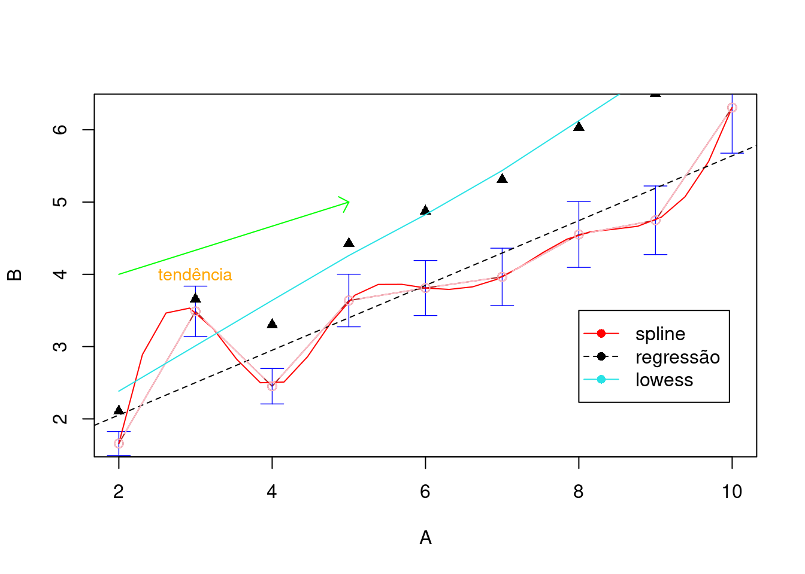
Também é possível a adição de barras de erro em diversos tipos de gráficos (pontos, barras), e por diversos pacotes. Exemplificando:
Alguns elementos adicionais podem ser inseridos no gráfico não apenas por coordenadas, como acima, mas pelo uso da função locator. Essa função aguarda um clique de mouse em coordenada escolhida pelo usuário, extraindo seus valores. Aplicada a uma ação para inserção de informação ao gráfico, executa essa inserção por clique de mouse, como no exemplo abaixo para adição de legenda.
A =seq(from=2, to=10)B = A/2+runif(n=9,min=0.2,max=2) # vetor resposta com com erro aleatóriolegend(locator(1),"legenda") # quando executada, o `R` aguarda um clique de mouse para inserção (por isso o índice 1)
8.2.3pairs - plot de todas as variáveis
Quando se deseja observar panoramicamente a relação entre todas as variáveis de um gráfico, é útil o uso da função pairs, como ilustrado abaixo.
df1 <-data.frame(list(a =1:10,b =sqrt(1:10),c =log(1:10),d =sin(1:10))) # criação de dataset multivariadopairs(df1)
8.2.4 Paineis
O sistema base permite a construção de gráficos na forma de paineis por digitação sucessiva dos plots pretendidos. A função utilizada é par(mfrow) ou par(mfcol), abreviações de linha ou coluna para multiple frame. Utilizando do dataframe acima:
a =1:10b =sqrt(1:10)c =log(1:10)d =sin(1:10) # vetoresplot.new()par(mfrow =c(2, 2))plot(a,b)plot(a,c)plot(a,d)plot(b,c)
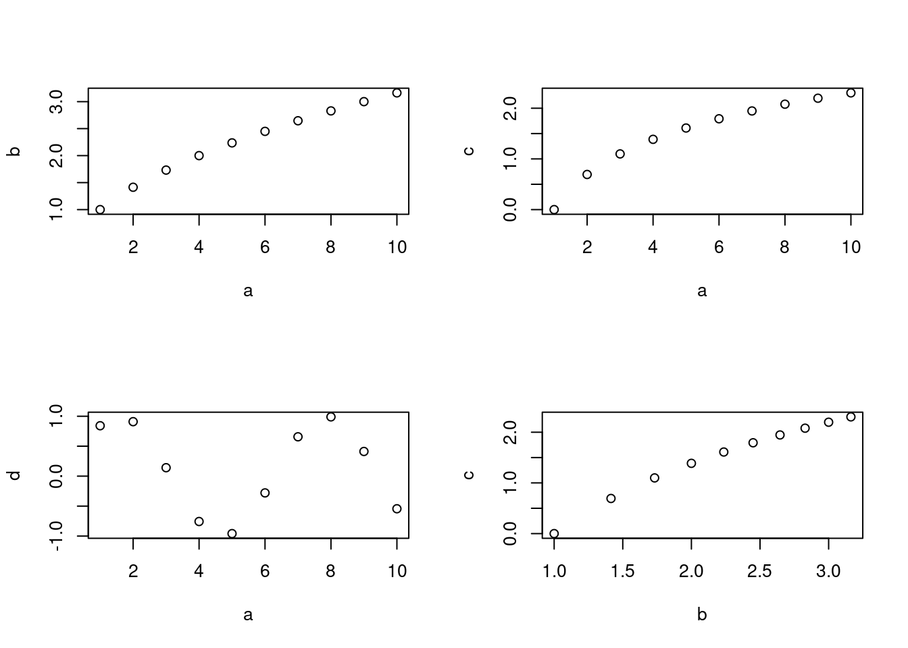
8.2.5 A função matplot
Embora o sistema base não seja o mais indicado para a produção de gráficos de dados multivariados, tais como ggplot2 e lattice, é possível sua construção com a função matplot. O comando produz um gráfico a partir de uma matriz, conceito que também cabe a um dataframe, ou de vetores obtidos por cálculo.
No uso de matplot a condição básica é que o tipo de gráfico seja de ponto ou de linha, não sendo permitidos demais tipos (barra, boxplot, etc).
Há duas formas para isso: uma similar à plot, adiciona-se plots sucessivos pelas funções matpoints e matlines. E outra a partir de matriz (dataframe) ou de vetores isolados. Ilustrando:
df.m <-matrix(1:24, ncol=6)colnames(df.m) <-list("A", "B", "C", "D", "E", "F") # criação de dataframe com 6 colunas (vetores), simulando um dataframematplot(df.m) # gráfico multivariado básico
Observe que matplot produz um gráfico multivariado com números representando os pontos. As variações abaixo incrementam a estética do gráfico, além de permitir sua produção por subconjuntos dos dados, bem como pelo uso de função matemática.
#matplot(df.m, pch=df.m, type=df.m, cex = df.m) # estética em função dos vetoresmatplot(df.m[2:4,c(3,6)],type =c("p","p","p"),pch =16,cex =2) # plot somente com vetores C e E, e linhas de 2 a 4
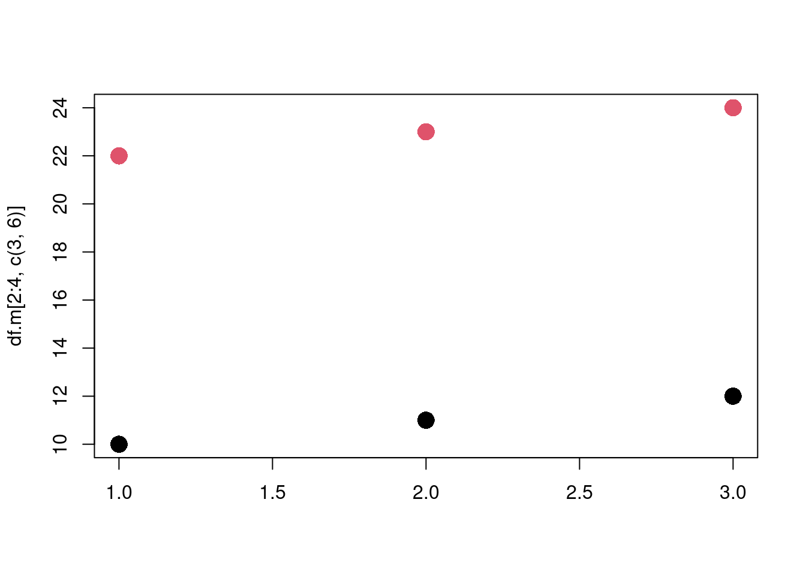
x <-c(2,5,7,10,13,20)/10# criação de variável independentematplot(x, outer(x, 1:4, function(x, k) x^k),pch = letters[1:4], type =c("b","p","o")) # com função matemática (observe o uso de `outer`)
Embora não seja normalmente considerado nas referências do R, a criação de gráficos com vetores ou dataframes de dados multivariados também pode ser realizad usando-se a função matplot, como abaixo:
## Plot multivariado com vetoresx <-c(2,5,7,10,13,20)y <-c(4, 7, 17, 25, 50, 55)z <- y/2w <- y^1.2dat<-cbind(x,y,z,w)matplot(x, dat, pch =c("x","y","z","w"), type =c("n","o","o","o")) # Obs: veja que há um truque para a produção gráfica: o símbolo de "x" é omitido (type="n")
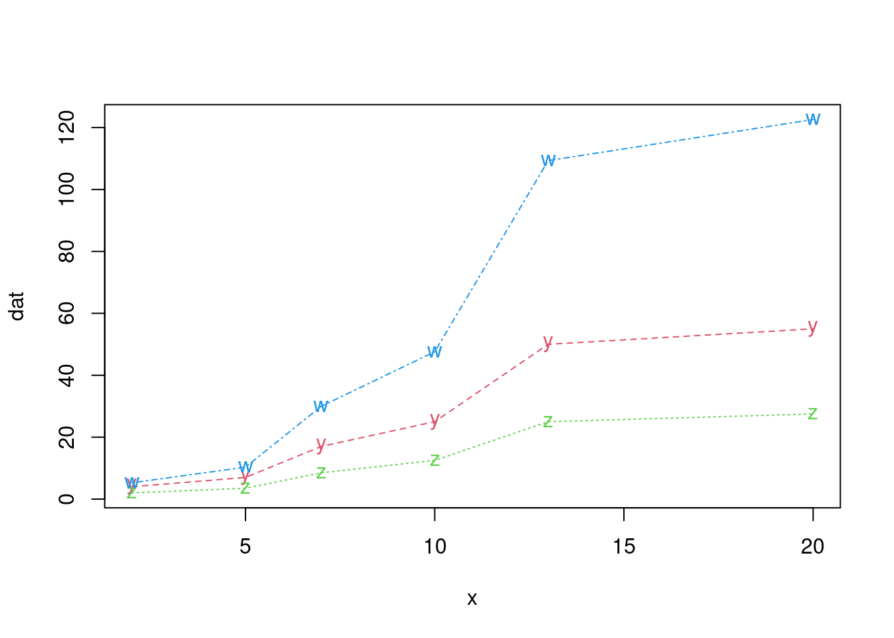
Reforçando aqui o comentário do trecho de código acima, veja que há um truque para a produção gráfica: o símbolo de “x” é omitido (type=“n”). Dessa forma, ainda que a sequência de “x” seja plotada, ela não é apresentada.
A consequência direta é que torna-se possível pelo sistema graphics básico aquilo que normalmente é alocado para sistemas mais elaborados, como ggplot2e lattice, descritos a seguir.
8.2.6 As funções plot, matplot, e curve
De certa forma, as funções acima presentes no graphics são intercambiáveis, como exemplificado a seguir, embora curve exija como variável independente x, mas com um produto final mais curvilinear:
x <--4:5y <- x^2plot(x,y, type="l", xlim=c(-4,5)) # função quadrática por `plot`
curve(x^2, xlim=c(-4,5)) # função quadrática por `curve`
matplot((-4:5)^2, pch=15, type="l")
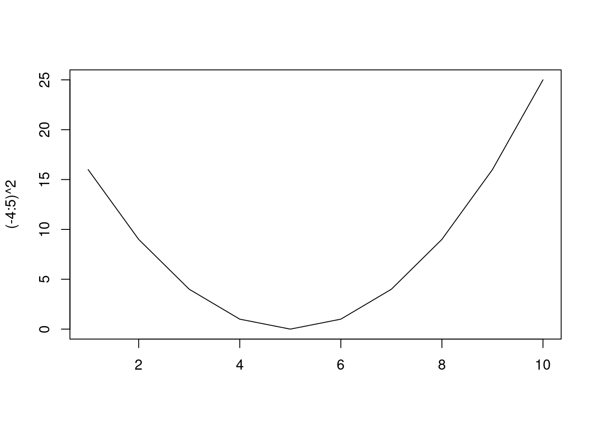
8.3 ‘Graphics’ e formato Long para dados multivariados
Embora não seja usual na literatura que trata o sistema base de gráficos do R, é possível trabalhar-se com dados multivariados sem a necessidade de se acrescentar linhas para cada plot construido.
Para isso, é necessário a construção dos dados em formato Long, como no exemplo a seguir.
x=1:12df <-data.frame( x,y=x^2+runif(n=12, 40,50), # uma função qualquergrupo=rep(c("g1", "g2", "g3", "g4"), each =3)) # cria o *dataframe* com um fator com 4 níveis
Agora é necessário atribuir aos níveis de um fator uma característica numérica, posto que cor, tipo e largura de linha, tamanho de pontos, etc, são também alocados por valores. Nesse caso:
niveis <-as.numeric(factor(levels(as.factor(df$grupo)))) # atribui um vetor de cores aos níveis dos grupos
Agora pode-se plotar os dados multivariados com a função ‘plot()’.
barplot(y~x, data=df,type="p",col=niveis)
Warning in plot.window(xlim, ylim, log = log, ...): graphical parameter "type"
is obsolete
Warning in axis(if (horiz) 2 else 1, at = at.l, labels = names.arg, lty =
axis.lty, : graphical parameter "type" is obsolete
Warning in title(main = main, sub = sub, xlab = xlab, ylab = ylab, ...):
graphical parameter "type" is obsolete
Warning in axis(if (horiz) 1 else 2, cex.axis = cex.axis, ...): graphical
parameter "type" is obsolete
O sistema base do graphics permite um conjunto bem mais extenso de características e performances além das que foram tratados aqui, pelo que recomenda-se ao interessado as inúmeras fontes de tutoriais da internete, livros e ebooks correlatos.
8.4 O sistema ggplot2
O R possui diversos pacotes pra criação de gráficos, dentre os quais destaca-se o ggplot2. Esse pacote permite a elaboração de um grande número de tipos (pontos, linhas, barras, histograma, etc) e com qualidade de publicação.
Basicamente o ambiente funciona tal e qual um editor de imagens, como o Corel Draw ou Inkscape, e que permitem a criação dessas por camadas. A única diferença é que em tais editores as camadas são depositadas ao bel prazer de seu criador. Já no ggplot2 as camadas tem propriedades fixas. Mas o bacana é que, tanto para a edição de imagens naqueles programas, como para a edição de gráficos no ggplot2, a alteração feita numa camada específica só altera essa, preservando as demais que “já deram certo”.
8.4.1 A gramática de gráficos & ggplot2
A produção de um gráfico pelo pacote ggplot2 envolve em síntese a elaboração de camadas sobrepostas. Essa ideia deriva-se dos conceitos de gramática de gráficos concebida por Wilkinson (2012), e concretizada no ggplot2 por Wickham (2011).
Nesse sentido é, de certa forma, parecida com a de alguns programas de criação e edição de imagens, como Corel Draw (MS Office) ou Inkscape (Linux, macOS, Windows). Diferente desses, contudo, o ‘ggplot2’ monta camadas específicas e distintas uma das outras.
Podem ser montadas até 7 sobrepostas em distintos arranjos, embora apenas 3 sejam indispensáveis (dados, estética, e geoma):
camadas
ideia
Dados
autoexplicativo
Estética
variáveis visuais - mapeamento de eixos, cor, preenchimento
Geomas
tipos de gráficos: pontos, lin has, barras, boxes, etiquetas de eixos (geom)
Estatística
transformação de dados para plotagem
Paineis
visualização de subconjunto de dados em paineis (facet)
Coordenadas
focalização do canvas (scales) e transformação de eixos (coord)
À despeito dessa “aparente complicação”, tudo se resume em apresentar os dados (data) e realizar seu mapeamento (mapping). O mapeamento obriga apenas a alocação das variáveis independente (x) e dependente (y) do gráfico. Mas para se visualizar os dados no gráfico, é necessário acrescentar ao menos um elemento geométrico (geom) - ponto ou linha, por exemplo.
De modo mais completo, o mapeamento é efetuado por 5 componentes da tabela acima: layer (elementos geométricos - geom, e transformações e resumos estatísticos - stat),scales,coord,facet,theme.
No ggplot2 camadas podem ser depositadas como numa sequência lógica pra criação de um gráfico:
Estabelece-se os dados que serão utilizados.
Define-se quem é o x e quem é o y.
Cria-se um tipo de gráfico.
Embeleza-se o gráfico criado (eixos, cores, símbolos, tamanhos).
Havendo empolgação, pode-se continuar com o ggplot2 aprimorando o gráfico criado. Para isso:
Observa-se alguma relação entre as variáveis.
Avalia-se um modelo para essa relação (reta, curva).
Insere-se no gráfico o modelo que se ajustou (equação e parâmetros).
Para uso de dados multivariados, a condição para uso do ggplot2 é que os mesmos estejam distribuidos em formato Long, ou seja, os níveis ou subconjuntos de uma variável precisam ser alocados num único vetor. Isso é simples quando se tem poucas linhas, mas complexo, quando tratar-se de vários níveis ou elementos em cada nível. No entanto, para se converter dados em Wide (várias colunas pra cada nível, x, y, z, etc) em Long (uma coluna única contendo os níveis x, y, z, etc), utiliza-se algumas funções, tais como do pacote reshape ou tydir (função gather pra converter a longer ou spread pra converter a wider).
Segue uma descrição sequencial para a elaboração de um gráfico de dados univariados pelo ggplot2, seguindo-se as camadas descritas acima. Posteriormente será apresentado a confecção gráfica para dados multivariados.
8.4.2 Simulando um conjunto pequeno de dados
Pra essa primeira etapa vamos construir uma tabela com dados fictícios. Lembrando ainda que poderíamos obter os dados por cópia/colagem, ou por importação de outra planilha.
Veja que surgiu um quadro (canvas), embora apenas o quadro, mesmo, sem nenhum x ou y. O que também é óbvio, pois não definimos essas variáveis ainda. Para isso:
ggplot(data=meus.dados, aes(x=dist, y=veloc))
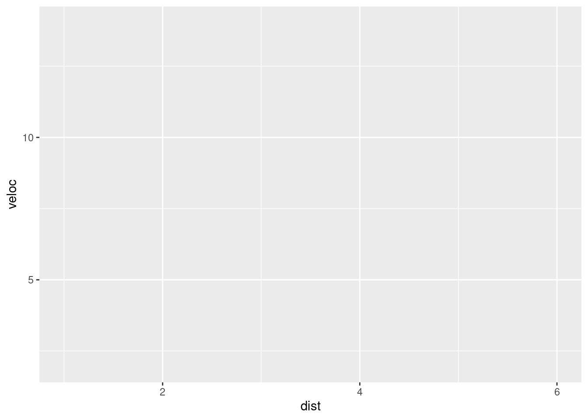
Agora o gráfico apresenta-se com os eixos, embora sem os dados da tabela. No conjunto de obviedades que se assoma, é claro, também não definimos que tipo de gráfico queremos. Ou seja, se ponto, linha, barra, ou algum pra lá de dúzia que compõe o pacote ggplot2.
Uma observação importantíssima: veja que as variáveis estão dentro de um parêntes iniciado pela função aes. Do inglês, uma abreviação de aesthetics, ou estética, em tradução livre. Todo gráfico do ggplot2 tem que conter essa função, que além de definir as variáveis envolvidas, também permite generalizar para as camadas outras características estéticas, como cor, tamanho, e forma.
8.4.4 Escolhendo o tipo de gráfico
De volta ao ofício, o tipo de gráfico no pacote ggplot2 é definido pelo tipo de geom, ou geoma, em tradução livre e um pouco óbvia, também. O ggplot2 tem geoms pra tudo que é gráfico. E para inseri-lo na linha de comando de produção desse, basta acrescentar seu tipo como uma camada adicional, usando o sinal ” + “, mesmo, como segue.
“Parfait” ! Agora, sim, quadro, dados, eixos gráficos, e pontos. Uma qualidade muito legal do ggplot2 e, na verdade, de qualquer programa que use linhas de comando para gerar resultados, como o próprio R, é que pra gente produzir um gráfico diferente não precisa criá-lo do zero; basta alterar o ponto específico que se deseja na linha de comando. Na prática, se ao invés de produzirmos um gráfico de pontos quisermos outros tipos, é só mudar o geom:
`geom_smooth()` using method = 'loess' and formula = 'y ~ x'
Warning in max(ids, na.rm = TRUE): no non-missing arguments to max; returning
-Inf
8.4.5 Oferecendo elegância ao gráfico
Bom, seguindo-se os ítens de construção de um gráfico lá de cima, agora é hora de “botar” elegância no produto ! Pra isso pode-se escolher algumas “estéticas” de cor (color), tamanho (size), translucidez (alpha), forma (shape), preenchimento do símbolo (fill) e sua espessura do tracejado do símbolo (stroke), e inseri-las como argumentos do geoma.
ggplot(data=meus.dados, aes(x=dist, y=veloc)) +geom_point(color="blue", size=5, # tamanho do símboloalpha =0.5, # transparência (0 a 1)shape =21, # tipo do símbolofill ="green", # preenchimento (só vale pra tipos vazios, obviamente)stroke =2) # espessura do tracejado do símbolo
Bonito, não ? Ou doido, mesmo !
Agora que melhoramos (…ou pioramos) o aspecto visual do gráfico, que tal dar um jeito nas etiquetas dos eixos (labels) ? Veja que estão com as abreviações das colunas x e y dos dados. Quem sabe algo com mais empáfia, então ?
Observe que tanto faz colocar as características dos pontos com identação, uma abaixo da outra, ou em linha, mesmo. A única diferença é que colocando uma abaixo da outra visualiza-se melhor o que se pretende fazer. Isso faz parte das “boas práticas de programação”.
Essa função labs permite também se colocar título, subtítulo, e uma observação (caption) no gráfico, veja:
ggplot(data=meus.dados, aes(x=dist, y=veloc, col ="red", size =5, alpha =0.5)) +geom_point(color="blue", size=5, alpha =0.5, shape =21, fill ="green", stroke =2) +labs(x ="distância percorrida (km)",y ="velocidade do foguete (km/min)",title ="Alcance do foguetinho !",subtitle ="Testes de campo",caption ="Obs: construção caseira")
8.4.7 Mudando a aparência de fundo
O ggplot2 apresenta como padrão esse canvas acizentado. Mas existem vários outros, bastando-se definir um tema (theme) ao gráfico:
ggplot(data=meus.dados, aes(x=dist, y=veloc, col ="red", size =5, alpha =0.5)) +geom_point(color="blue", size=5, alpha =0.5, shape =21, fill ="green", stroke =2) +labs(x ="distância percorrida (km)",y ="velocidade do foguete (km/min)",title ="Alcance do foguetinho !",subtitle ="Testes de campo",caption ="Obs: construção caseira") +theme_bw()
ggplot(data=meus.dados, aes(x=dist, y=veloc, col ="red", size =5, alpha =0.5)) +geom_point(color="blue", size=5, alpha =0.5, shape =21, fill ="green", stroke =2) +labs(x ="distância percorrida (km)",y ="velocidade do foguete (km/min)",title ="Alcance do foguetinho !",subtitle ="Testes de campo",caption ="Obs: construção caseira") +theme_classic()
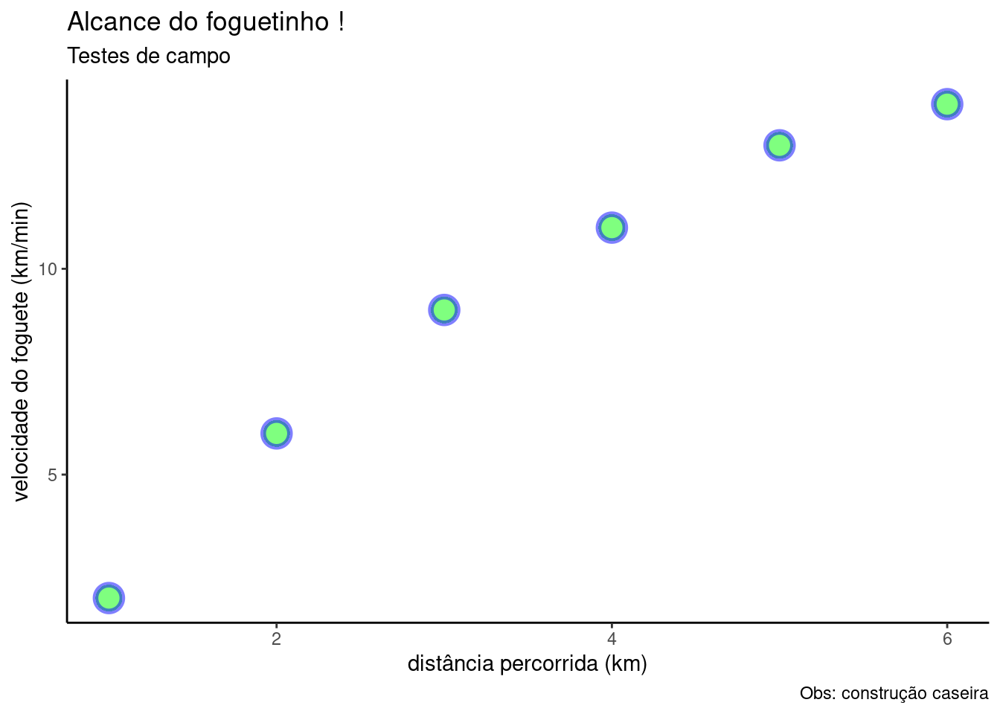
ggplot(data=meus.dados, aes(x=dist, y=veloc, col ="red", size =5, alpha =0.5)) +geom_point(color="blue", size=5, alpha =0.5, shape =21, fill ="green", stroke =2) +labs(x ="distância percorrida (km)",y ="velocidade do foguete (km/min)",title ="Alcance do foguetinho !",subtitle ="Testes de campo",caption ="Obs: construção caseira") +theme_linedraw()
8.4.8 Alterando o tamanho da fonte
Nessa versão dá pra notar que o tamanho dos valores nos eixos, bem como o tamanho de suas etiquetas, deixam um pouco a desejar à estética do gráfico. Aumentando esses valores um pouquinho dentro da função theme (o padrão ou default é fonte 11)…
ggplot(data=meus.dados, aes(x=dist, y=veloc, col ="red", size =5, alpha =0.5)) +geom_point(color="blue", size=5, alpha =0.5, shape =21, fill ="green", stroke =2) +labs(x ="distância percorrida (km)",y ="velocidade do foguete (km/min)",title ="Alcance do foguetinho !",subtitle ="Testes de campo",caption ="construção caseira") +theme_bw(base_size =14)
Se desejar omitir alguma informação do gráfico, basta omiti-la da linha de comando. Por exemplo, se desejarmos retirar título, subtítulo e nota de observação:
ggplot(data=meus.dados, aes(x=dist, y=veloc, col ="red", size =5, alpha =0.5)) +geom_point(color="blue", size=5, alpha =0.5, shape =21, fill ="green", stroke =2) +labs(x ="distância percorrida (km)",y ="velocidade do foguete (km/min)") +theme_bw(base_size =14)
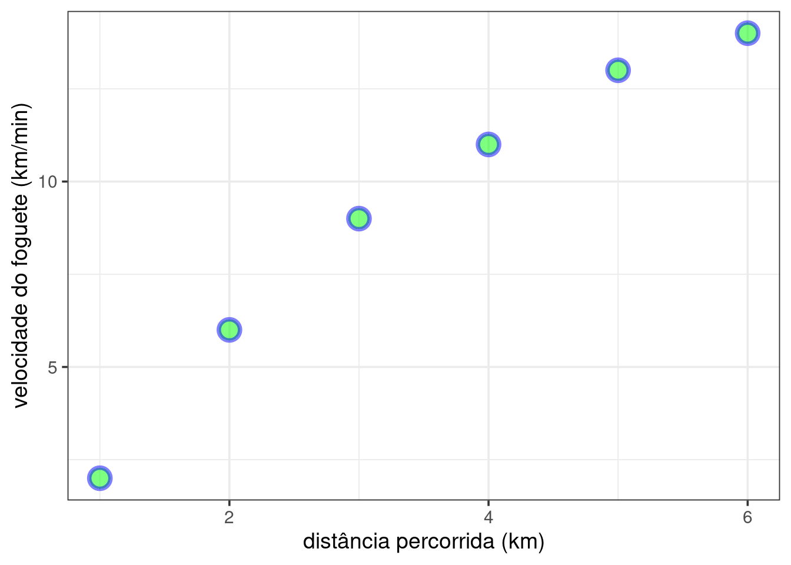
8.4.9 Mudando os limites dos eixos
Dá pra melhorar mais um pouco a visualização ?! Sempre dá, claro. Por exemplo, observe que nosso gráfico não inicia na origem, ou seja, quando x e y tem valor zero. Se quisermos alterar então esses eixos pra iniciarem no zero…bom…lá vai mais uma camada !!
Apesar de mais “pomposo” tanto o nome como as possibilidades dessa camada coord_cartesian, também é possível obter o mesmo efeito apenas com os argumentos xlim e ylim, e de modo um pouquinho diferente. Pra não repetir o gráfico acima, segue um exemplo com limites distintos nos eixos:
Agora que nosso gráfico tá (…ou deveria estar) mais incrementado, que tal colocar uma linha de ajuste dos pontos ? Modelos pra isso não faltam, mas optemos inicialmente pelo mais simples: um ajuste ou regressão linear. Resumidamente, trata-se de observar se a resposta y segue uma tendência linear com os valores de x. E como o ggplot2 trabalha com camadas, adicionemos essa camada, então:
Warning: Using `size` aesthetic for lines was deprecated in ggplot2 3.4.0.
ℹ Please use `linewidth` instead.
`geom_smooth()` using formula = 'y ~ x'
Agora ficou chique !! E também indecifrável…ou quase. Indo por partes: o método escolhido foi lm, ou modelo linear (linear model). O termo poderia ser também substituido por 'y ~x', uma notação do R que indica a dependência de y em relação a x. O argumento linewidth sinaliza pra espessura do tracejado. E a banda acizentada indica o intervalo de confiança do ajuste (erro padrão). Pra retirar essa última, bem como a legenda doida, basta fazer:
ggplot(data=meus.dados, aes(x=dist, y=veloc, col ="red", size =5, alpha =0.5)) +geom_point(color="blue", size=5, alpha =0.5, shape =21, fill ="green", stroke =2) +labs(x ="distância percorrida (km)",y ="velocidade do foguete (km/min)") +theme_bw(base_size =14) +geom_smooth(method ='lm', linewidth =0.5, se =FALSE, show.legend =FALSE)
`geom_smooth()` using formula = 'y ~ x'
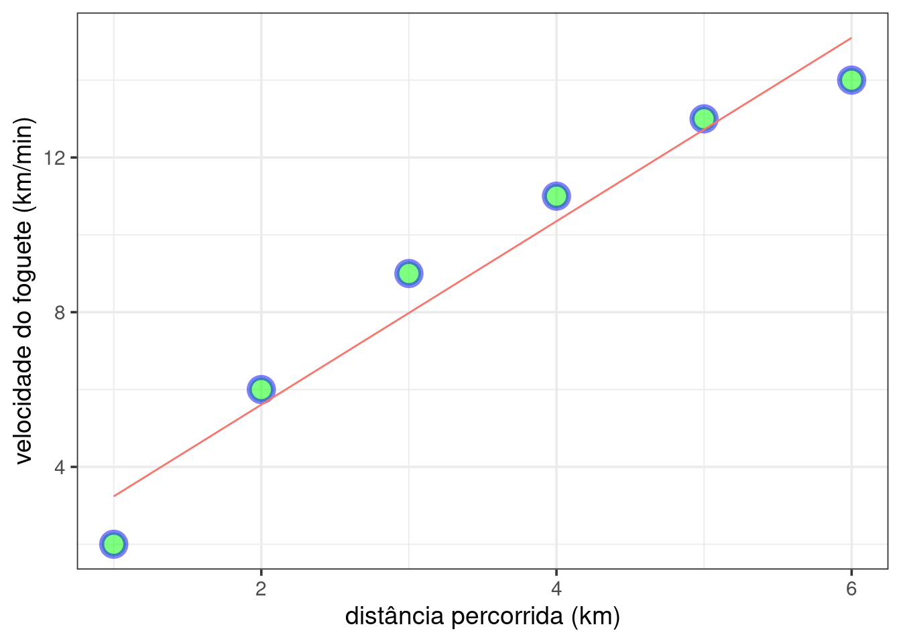
Existem diversos parâmetros que são obtidos pela função lm. Dada a natureza de programação orientada a objeto do R, esses parâmetros podem ser acessados individualmente em seus objetos. Exemplificando:
attributes(lm)
NULL
8.4.10.2 Ajuste polinomial
Apesar de bem incrementado esse gráfico final, observe que a tendência dos pontos não é propriamente linear. Tá parecendo mais uma curva. E dentre as curvas possíveis, quem sabe uma parábola. Nesse caso é preferível ajustar o modelo a uma parábola, mais condizente mesmo com a trajetório de um foguete. Pra isso, basta que alteremos acrescentemos qual a formula a ser empregada:
ggplot(data=meus.dados, aes(x=dist, y=veloc, col ="red", size =5, alpha =0.5)) +geom_point(color="blue", size=5, alpha =0.5, shape =21, fill ="green", stroke =2) +labs(x ="distância percorrida (km)",y ="velocidade do foguete (km/min)") +theme_bw(base_size =14) +geom_smooth(method ='lm', formula = y ~poly(x, 2), linewidth =0.5, color ="orange", se =FALSE, show.legend =FALSE)
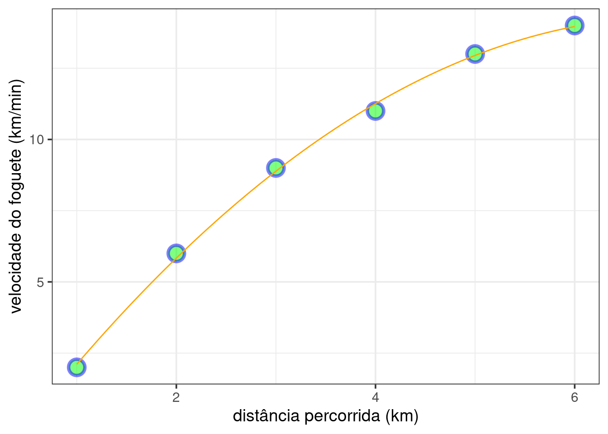
Apesar de um pouco confuso, a expressão formula = y ~ poly(x, 2) indica tratar-se de um ajuste para um polinômio de 2a. ordem em x. E, claro, uma “corzinha” adicional no tracejado não faz mal a ninguém !
8.4.11 Salvando o gráfico
Agora, pra se guardar esse gráfico, um tanto trabalhoso, convenhamos, o R permite o salvamento em diversos formatos, como JPG, BMP, TIFF, PDF, PNG, EPS, por exemplo. Dois jeitos de salvar o gráfico: um se dá pelo menu de Plots do canto inferior esquerdo do RStudio (Plots –> Export). Se quisermos o armazenamento por linha de comando, por outro lado, basta utilizar a função ggsave logo após a criação do gráfico.
ggplot(data=meus.dados, aes(x=dist, y=veloc, col ="red", size =5, alpha =0.5)) +geom_point(color="blue", size=5, alpha =0.5, shape =21, fill ="green", stroke =2) +labs(x ="distância percorrida (km)",y ="velocidade do foguete (km/min)") +theme_bw(base_size =14) +geom_smooth(method ='lm', formula = y ~poly(x, 2), linewidth =0.5, color ="orange", se =FALSE, show.legend =FALSE)
Se você não especificou onde salvar o gráfico, veja no diretório raiz do computador. Explicando brevemente a função, dpi representa a resolução do gráfico, enquanto que width e height especificam o tamanho.
Mas também dá pra salvar o gráfico sem qualquer especificação. Exemplificando pra um arquivo PDF:
ggsave(filename ="plot.meus.dados.pdf")
Saving 7 x 5 in image
8.4.12 Simplificando a construção de um gráfico
Bom, ainda que o gráfico acima tenha um certo ar de sofisticação, não é sempre que se deseja isso. Na maior parte das vezes, o que se quer é plotar os dados e observar alguma tendência. E, pra isso, não é necessário todas essas camadas, funções e argumentos. Para se plotar algo “parecido” com o gráfico acima, mas sem toda essa pompa, basta fazermos:
O pacote ggplot2 é normalmente empregado para a criação de de gráficos a partir de um dataset. Não obstante, é possível produzir também um gráfico apenas com vetores, tal como segue:
x <-1:360y =sin(x)library(ggplot2)ggplot( data =NULL ,mapping =aes( x = x , y = y ) ) +geom_line() +geom_point(shape =15, col ="red", size =0.5)+labs(x="eixo x", y="eixo y") +coord_cartesian(xlim=c(45,90))
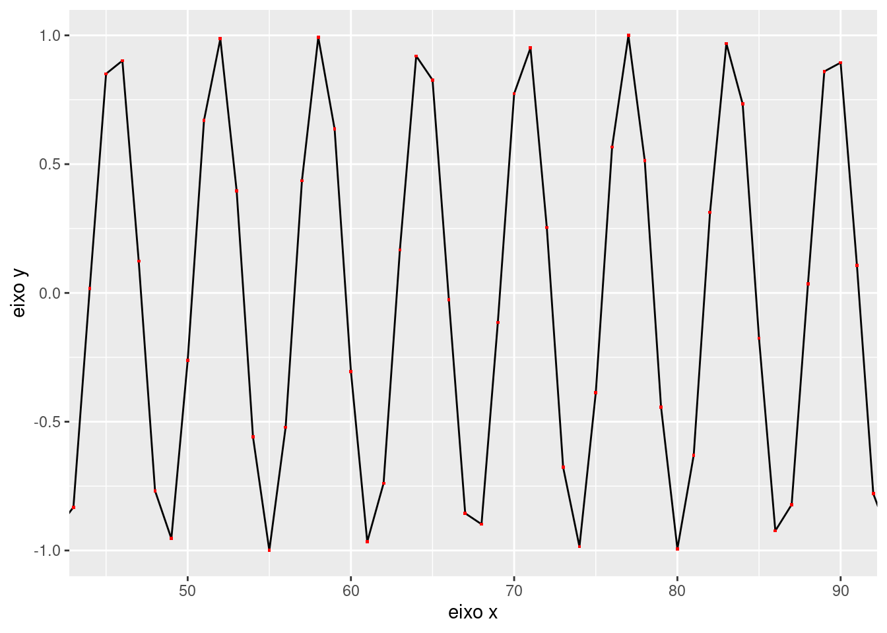
8.4.14 Simulação & função em ggplot2
Como o sistema base, o ggplot2 possui também uma função para a produção de tendências por equações introduzidas, geom_function. Exemplificando:
Como explicado acima, o ggplot2 trabalha exclusivamente com dados em formato Long, ou seja, uma variável para cada quantidade. Dessa forma, os subconjuntos de uma variável (ou nível) devem situar-se nessa única variável. Ilustrando:
tempo <-c(rep(rep(1:4, 4),4))resposta <-c(1,2,3,4,2,4,6,8,10,14,18,22,24,30,36,42)niveis <-c(rep("A",4),rep("B", 4), rep("C", 4), rep("D", 4)) # criação de dataframe com níveisdf <-data.frame(tempo, resposta, niveis); df
tempo resposta niveis
1 1 1 A
2 2 2 A
3 3 3 A
4 4 4 A
5 1 2 B
6 2 4 B
7 3 6 B
8 4 8 B
9 1 10 C
10 2 14 C
11 3 18 C
12 4 22 C
13 1 24 D
14 2 30 D
15 3 36 D
16 4 42 D
17 1 1 A
18 2 2 A
19 3 3 A
20 4 4 A
21 1 2 B
22 2 4 B
23 3 6 B
24 4 8 B
25 1 10 C
26 2 14 C
27 3 18 C
28 4 22 C
29 1 24 D
30 2 30 D
31 3 36 D
32 4 42 D
33 1 1 A
34 2 2 A
35 3 3 A
36 4 4 A
37 1 2 B
38 2 4 B
39 3 6 B
40 4 8 B
41 1 10 C
42 2 14 C
43 3 18 C
44 4 22 C
45 1 24 D
46 2 30 D
47 3 36 D
48 4 42 D
49 1 1 A
50 2 2 A
51 3 3 A
52 4 4 A
53 1 2 B
54 2 4 B
55 3 6 B
56 4 8 B
57 1 10 C
58 2 14 C
59 3 18 C
60 4 22 C
61 1 24 D
62 2 30 D
63 3 36 D
64 4 42 D
Note que cada elemento estético pode ser configurado para cada geom. Alternativamente, pode-se conferir os elementos estéticos combinando-os para o gráfico geral, bem como para cada camada:
tempo <-c(rep(rep(1:4, 4),4))resposta <-c(1,2,3,4,2,4,6,8,10,14,18,22,24,30,36,42)niveis <-c(rep("A",4),rep("B", 4), rep("C", 4), rep("D", 4)) # criação de dataframe com níveisdf <-data.frame(tempo, resposta, niveis)library(ggplot2)ggplot(data=df, aes(x=tempo, y=resposta, shape=niveis, color=niveis)) +geom_point(aes(size=5)) +geom_line(aes(linetype=niveis))
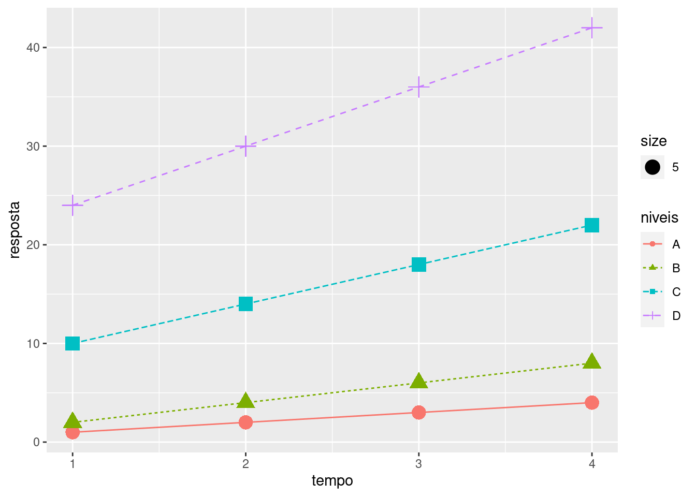
Para um conjunto com visual sobreposição de pontos, pode-se também empregar a função jitter, como no graphics:
Como um recurso estético e analítico significativo, o faceting permite ao ggplot2 a visualização multivariada em paineis. Seguem exemplos para o dataset acima.
tempo <-c(rep(rep(1:4, 4),4))resposta <-c(1,2,3,4,2,4,6,8,10,14,18,22,24,30,36,42)niveis <-c(rep("A",4),rep("B", 4), rep("C", 4), rep("D", 4)) # criação de dataframe com níveisdf <-data.frame(tempo, resposta, niveis)ggplot(data=df, aes(x=tempo, y=resposta, shape=niveis, color=niveis)) +geom_point(aes(size=5)) +geom_line(aes(linetype=niveis))+facet_grid(cols=vars(niveis)) # paineis verticais (útil para visualização da ordenada)
ggplot(data=df, aes(x=tempo, y=resposta, shape=niveis, color=niveis)) +geom_point(aes(size=5)) +geom_line(aes(linetype=niveis))+facet_grid(rows=vars(niveis)) # paineis horizontais (útil para visualização na abscissa)
ggplot(data=df, aes(x=tempo, y=resposta, shape=niveis, color=niveis)) +geom_point(aes(size=5)) +geom_line(aes(linetype=niveis))+facet_wrap(vars(niveis)) # paineis divididos (útil na visualização equilibrada de abscissa e ordenada)
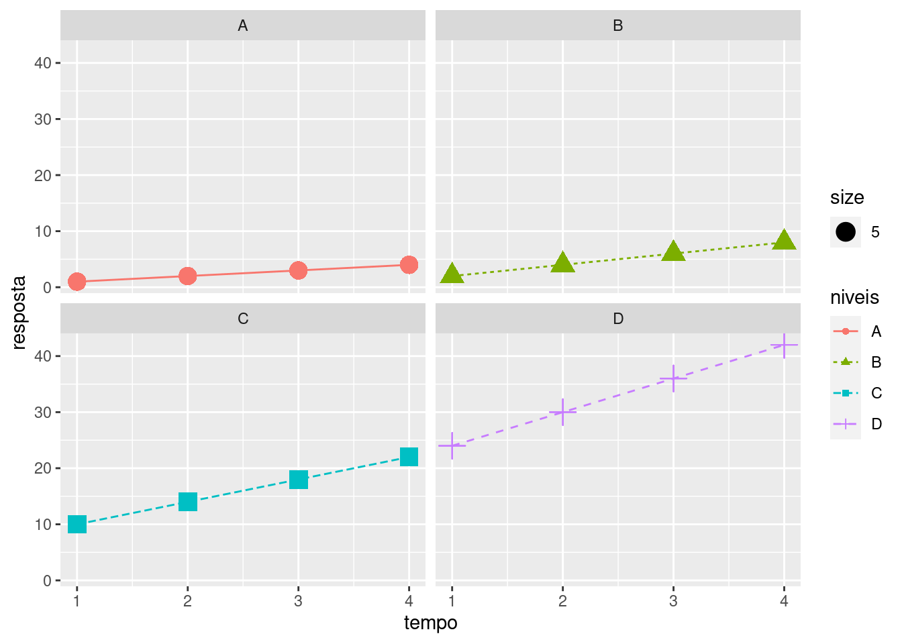
8.4.17 Gráfico de matriz de dados
Assim como para o sistema base, o ggplot2 também permite a construção de gráficos de matriz de pontos (pairs), embora com maior riqueza de detalhes. Para isso, é necessária a instalação do pacote GGally, que extende as possibilidades do ggplot2, e o uso da função ggpairs, como segue:
library(GGally)ggpairs(iris)
`stat_bin()` using `bins = 30`. Pick better value with `binwidth`.
`stat_bin()` using `bins = 30`. Pick better value with `binwidth`.
`stat_bin()` using `bins = 30`. Pick better value with `binwidth`.
`stat_bin()` using `bins = 30`. Pick better value with `binwidth`.
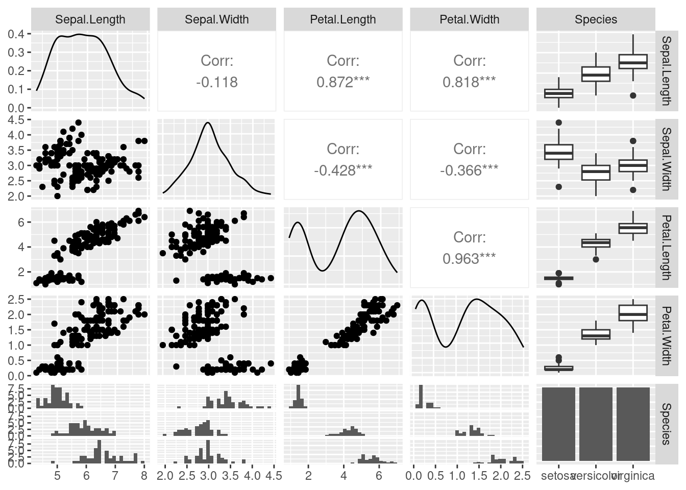
8.4.18 O pacote ggmatplot
O ggplot2 foi concebido para visualização gráfica de dados em formato Long. Isso pode ser um tanto trabalhoso quando se tem dados em formato Wide, já que é necessário converter o dataset para Long.
Nesse sentido, o pacote ggmatplot foi idealizado de modo parecido ao matplot, tendo em mente a necessidade de se elaborar um gráfico com o pacote ggplot2, mas com dados originalmente em formato Wide. Segue um exemplo.
x <-c(2,5,7,10,13,20)y <-c(4, 7, 17, 25, 50, 55)z <- y/rnorm(6,0,1)dat<-cbind(x,y,z)library(ggmatplot)ggmatplot(x,y,size=2, shape="circle", color ="blue")
Assim como para o sistema base de graphics, existem tutoriais e livros completos sobre o uso detalhado do ggplot2, tendo-se arranhado aqui apenas algumas de suas características.
8.5 O sistema lattice
Baseado na plotagem do sistema trellis, o lattice situa-se, ao menos na visão deste autor, a meio caminho entre o graphics e o ggplot2, combinando boas caraterísticas de ambos, tais como elencadas abaixo.
Pode-se trabalhar com formato Wide (graphics), bem como em Long (ggplot2);
Possui simplicidade algorítmica para gráficos mais simples (graphics), embora possa produzir plots bastante complexos (e com algoritmo ídem), e em uma única linha de comando (ggplot2);
Tem seu ponto forte na elaboração de gráficos de dados multivariados (ggplot2), possibilitando sua apresentação em um único gráfico ou em paineis (faceting, ggplot2);
Como o graphics, permite inserir resultados de computação estatística ou numérica na construção dos gráficos (embora não tão trivial como o base).
Como o graphics, utiliza comandos semelhantes (cex, type, lty, etc).
O lattice emprega uma fórmula na construção de linha única de seu algoritmo (trellis), tal que:
Trellis formula: y~x | variável_condicional, grupos = variável_grupo
Alguns exemplos a seguir empregam variações intuitivas da fórmula acima para a construção de gráficos no lattice:
xyplot(y~x)xyplot(y~x1+x2)xyplot(y~x+y~z)xyplot(y~x | z) # o símbolo "|" indica agrupamentoxyplot(y~x | g1 + g2) # juntando dois subgruposxyplot(y~x | g, groups = k ) # separa os paineis de níveis "g" por subgrupos "k"
O lattice permite a produção gráfica quer por formato Long como por Wide, com as fórmulas ilustradas a seguir:
Long: y~x | grupo y~x, groups=grupoWide: y~x1+x2+...
O trecho de código abaixo exemplifica o uso do lattice para o dataframe multivariado utilizado para o ggplot2, para comparação, e incluindo algumas variações simples tanto do dataset como da linha de algoritmo.
tempo <-c(rep(rep(1:4, 4),4))resposta <-c(1,2,3,4,2,4,6,8,10,14,18,22,24,30,36,42)resposta2 <- resposta +runif(16,2,5)niveis <-c(rep("A",4),rep("B", 4), rep("C", 4), rep("D", 4)) # criação de dataframe com níveisgrupos <-rep(c("g1", "g2", "g3", "g4"),4) df <-data.frame(tempo, resposta2, niveis, grupos) # criação de dataframe com níveis e gruposdf <-data.frame(tempo, resposta2, niveis)library(lattice)xyplot(resposta2~tempo, data=df) # plot básico
xyplot(resposta2~tempo, groups=niveis, data=df,type=c("p","spline")) # separação por grupos e adição de curva suave
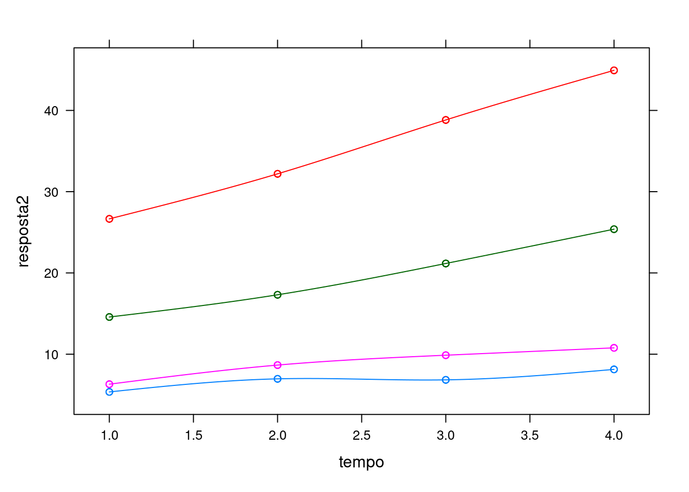
xyplot(resposta2~tempo | niveis, data=df,type=c("p","r"),cex=2, lty=4, pch=16, col=4,alpha=0.5) # divisão em paineis e regressão linear
xyplot(resposta2~tempo | niveis, groups = grupos, data=df) # divisão por paineis e grupo
Assim como para os sistemas anteriores, o lattice possui uma infinidade de variações, e cujo montante foge do escopo deste trabalho, sugerindo-se ao leitor o universo da internete, de ebooks e livros a respeito.
8.6 Outros pacotes gráficos
8.6.1 plotmath
8.6.2 plotrix
Esse pacote permite a construção de diversos tipos de gráficos e personalizações variadas (escala partida, barras de erros), como os exemplificados pelo desenvolvedor.
library(plotrix)y<-runif(10)err<-runif(10)plotCI(1:10,y,err,2*err,lwd=2,col="red",scol="blue",main="Dispersão") # barras de erro em pontos
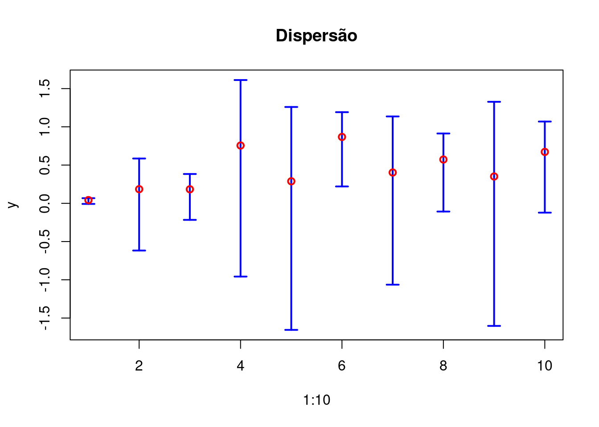
data(warpbreaks)attach(warpbreaks)wmeans<-by(breaks,tension,mean)wsd<-by(breaks,tension,sd)plotCI(barplot(wmeans,col="gray",ylim=c(0,max(wmeans+wsd))),wmeans,wsd,add=TRUE) # barras de erro em barplot
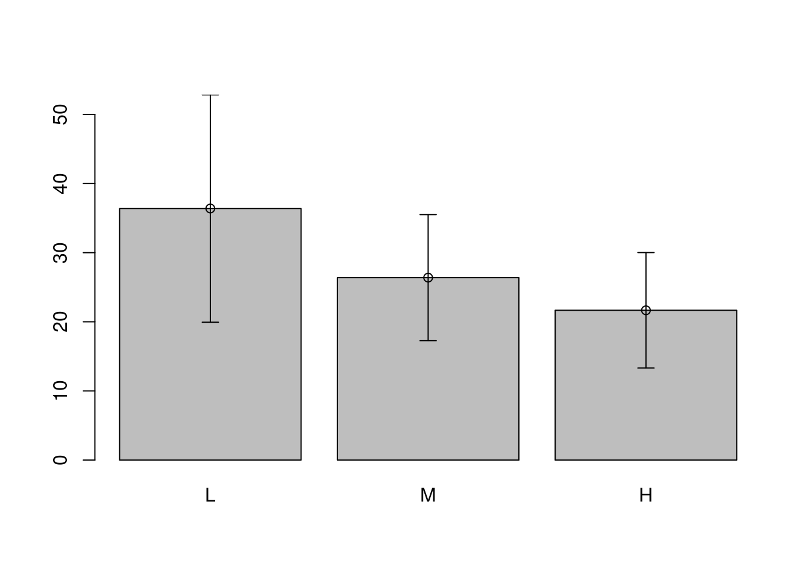
x <-1:10; y=1:10plot(x,y)
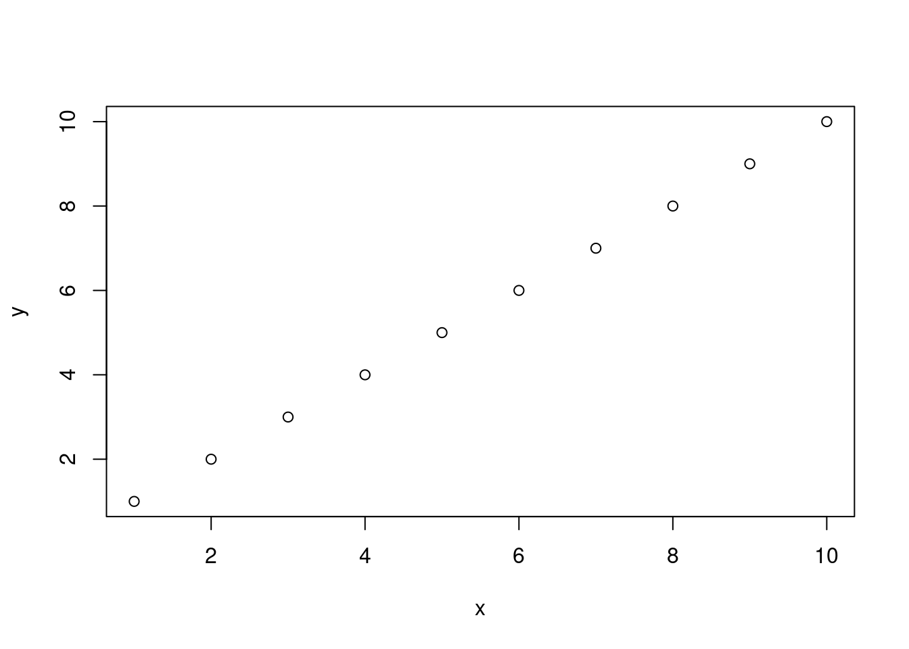
gap.plot(x, y, gap =c(2, 7), gap.axis ="x") # escala partida
Warning in gap.plot(x, y, gap = c(2, 7), gap.axis = "x"): some values of x will
not be displayed
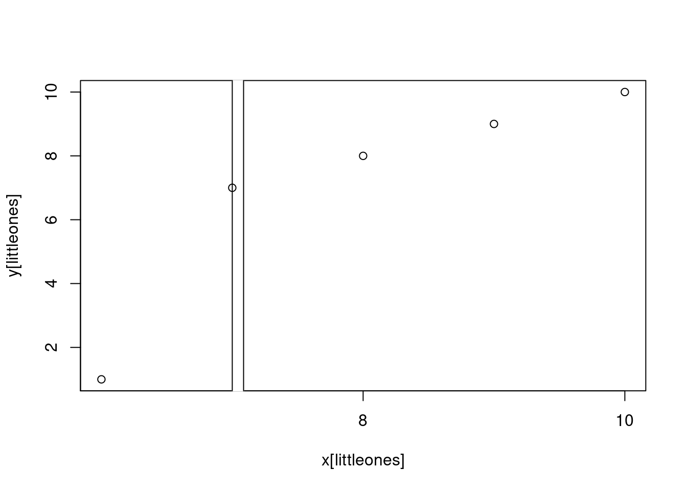
zoomInPlot(rnorm(100),rnorm(100),rxlim=c(-1,1),rylim=c(-1,1), zoomtitle="Zoom In Plot",titlepos=-1.5) # cria plot e janela retangular de ampliação de dados
pieval<-c(2,4,6,8)pielabels<-c("detestam","são contrários","não se \n importam","gostam muito")# grab the radial positions of the labelslp<-pie3D(pieval,radius=0.9,labels=pielabels,explode=0.1,main="torta 3")